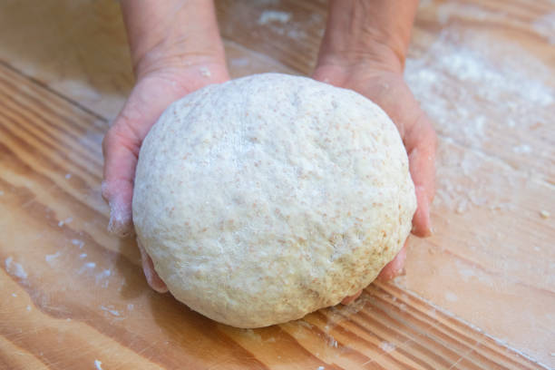

Pizza Dough

Poolish Recipe
- 300gr lukewarm water
- 5g Dry Yeast
- 5g Honey
- 300gr 00 Pizza Flour
Poolish Directions
- Mix all ingredients together
- Cover and let rest on counter for 1 hour
- After 1 hour place into the fridge overnight
Dough Recipe
- 700gr lukewarm water
- 40gr Salt
- 1250gr 00 Pizza Flour
Dough Directions
Remove poolish from fridge and let rest for 30 to 45 minutes.
In a large bowl, add poolish, flour and salt and mix.
Add water little by little to allow the flour to absorb water slowly.
Knead for 10+ minutes. Dough will be sticky.
Remove from bowl and use brench scraper to form into a tight ball.
Lightly coat bowl with olive oil and place upside down over the top of the dough ball and let rest for 1-hour.
Cut ball into 8 equal parts. Balls should be 250gr to 810gr.
Form balls and place into the dough sheets to rise.
Allow to rest for 2 hours if your using the dough. If freezing bag and freeze, dont allow to rest.